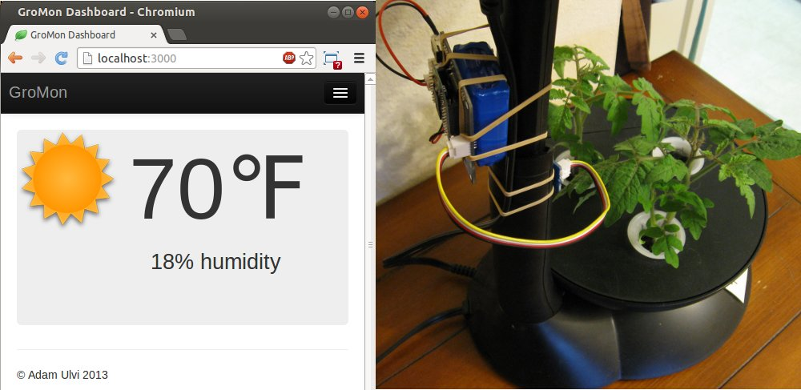
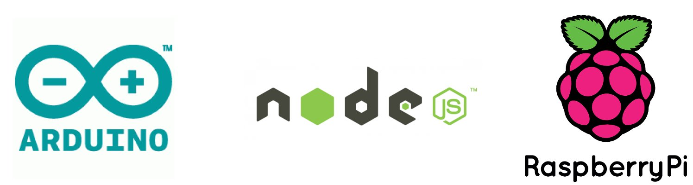
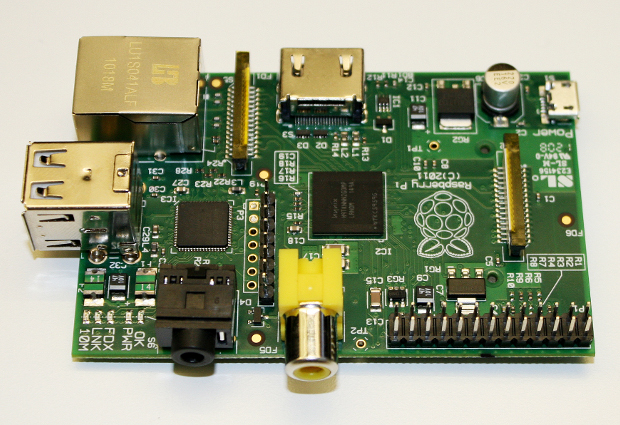
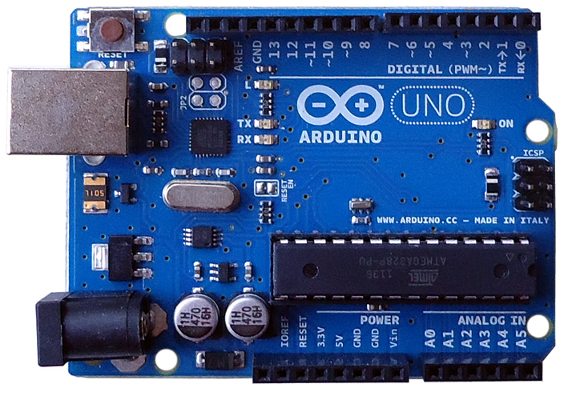
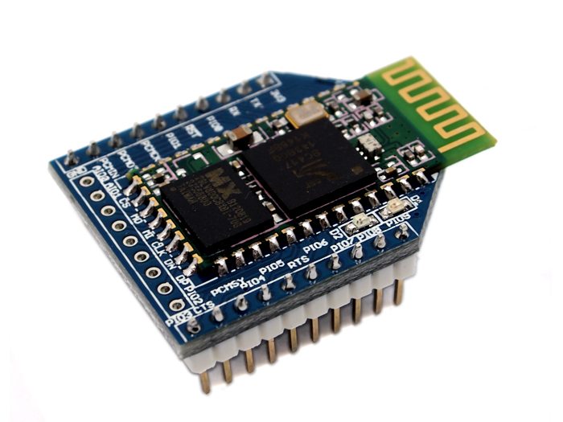
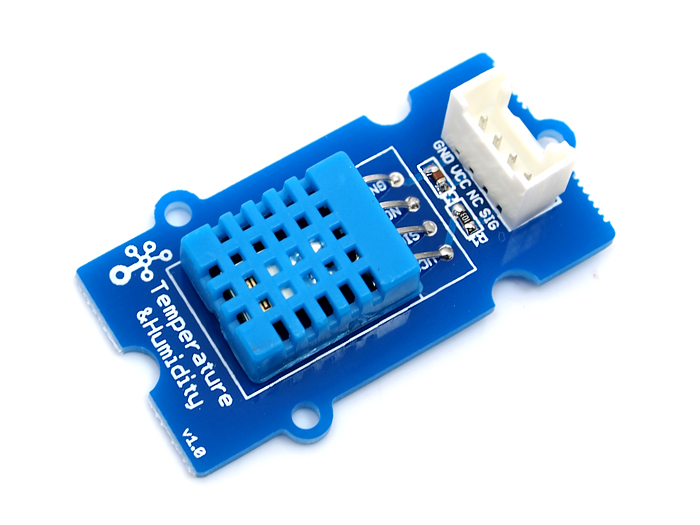
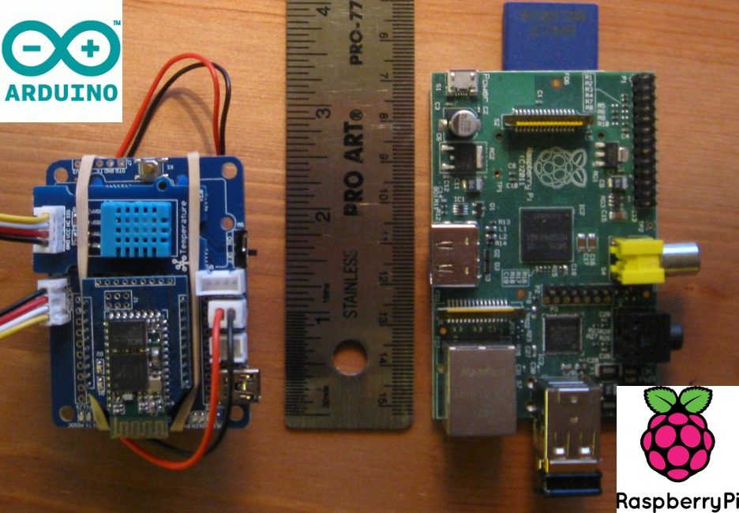
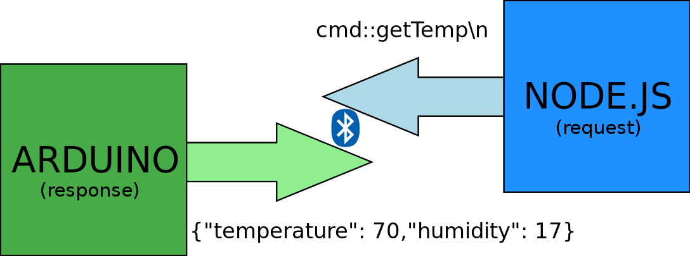

Adam Ulvi
Wikipedia says:
“A wireless sensor network (WSN) consists of spatially distributed autonomous sensors to monitor physical or environmental conditions, such as temperature, sound, pressure, etc. and to cooperatively pass their data through the network to a main location.”








an arduino eating serial
String input= "";
void loop() {
readBtSerial(); // Read bluetooth data into 'input'.
commandLoop(); // Take action on the command strings.
}
void readBtSerial() {
while (blueToothSerial.available()) {
char in = (char) blueToothSerial.read();
if (in == '\n') {
ready = true;
} else {
input += in;
}
}
}
void commandLoop() {
if (blueReady == true) { // Do stuff with the blueInput string };
}
node.js eating serial
var
serialport = require('serialport')
, serial = new serialport.SerialPort(
"/dev/rfcomm0"
, { baudrate: 38400,
parser: serialport.parsers.readline("\n") }
)
;
serial.on('open'), function() {
console.log("Port open");
serial.on('data', function(data) {
console.log(data);
}
});
Demo!